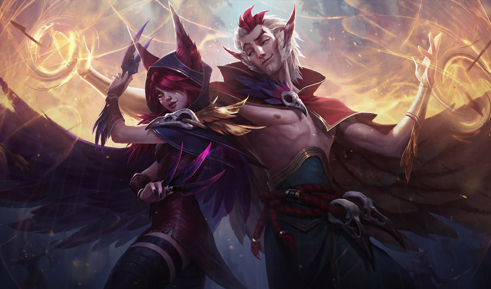

Rakan
Rakan fue el primer campeón que me inspiró a jugar como soporte. Su forma de proteger con estilo, su agilidad, y su vínculo con Xayah me marcaron profundamente. Sentí que su rol reflejaba mucho de mi personalidad: estar para el otro, asistir, proteger sin protagonismo.
“Dicen que somos caos, pero hasta el caos baila con ritmo si sabés escucharlo.”
Rell

"¿Sabés lo que es el dolor? Porque yo sí."
Rell representa lo más crudo del rol de soporte: resistir, proteger y soportar el peso del equipo. Su historia es de sufrimiento y rebeldía. Fue entrenada como arma, pero eligió luchar por quienes no pueden defenderse. Jugar con ella es entender que proteger también puede doler.
Janna

"Siempre protegiendo."
Janna es la brisa que nunca se ve, pero siempre está. Me recordó que el mejor soporte no es el que brilla, sino el que aparece cuando se lo necesita. Su estilo pasivo y protector me enseñó a confiar en la paciencia y la presencia.
Soraka

"He abandonado las estrellas... por ustedes."
Soraka renunció a su divinidad para cuidar a los mortales. Esa frase me marcó: dejar de lado el ego, y sanar sin esperar nada a cambio. Es una campeona que te hace sentir que apoyar también puede ser un acto sagrado.
Leona

"Proteger es mi deber y mi orgullo."
Leona me enseñó que el soporte también lidera. Con su escudo y su luz, siempre va al frente, sin miedo. Su forma de defender al equipo me ayudó a entender que ser el primero en recibir el golpe es, muchas veces, el acto más valiente.